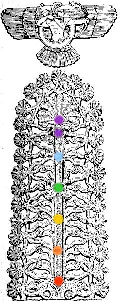
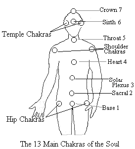
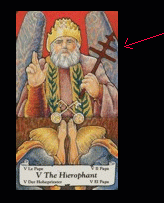

The chakras are the powerful energy centers of the soul. Each one has a separate function along with certain specific powers. The health of our chakras affects both our physical, emotional, and mental health. There are different parts of the soul, the chakras are the most important and major part.
There are seven major chakras located along the spine that are the most
powerful. Each of these chakras vibrates to the frequency of the light spectrum. Satanism strongly supports science, as all of the spiritual and the occult can be scientifically explained. Both science and spirituality complement each other, and work together. Because of the incessant attacks and suppression of scientific inquiry and knowledge by the Christian Churches, science has been held back dangerously and has not reached a level to where all of the occult can be fully explained, but it will in time. The soul is made of light.
"Light is Power"
--Lilith
Six smaller, but equally powerful chakras are located on each side of the hips, shoulders, and the temples on the sides of the head. The chakras function to empower the soul with energy. These thirteen chakras are essential to life. No one can live without them. Because so much ancient knowledge has been systematically destroyed and much of what remains has been corrupted, most of what is openly available concerning the chakras, unfortunately is flawed. Satan and the Powers of Hell reveal spiritual knowledge as we advance ourselves through meditation.
Given the experiences of many, it appears that the three granthis [knots where the chakra concerned has a powerful energy block that prevents the serpent from ascending] are not at the base, heart, and sixth chakras as popularly taught, but are at the second [sacral] chakra, the throat chakra, and the crown chakra. There have been many accounts of one's heart chakra feeling a burning sensation; as the serpent cannot ascend any further due to a blocked throat chakra.
Now, if the heart chakra were blocked and contained one of the three granthis, the burning sensation would manifest in the solar chakra, not the heart. Going further, the sensation of the crawlies near the crown chakra strongly indicates that chakra is blocked. If it were the 6th chakra as most sources of information available inform us, the sensation would be at the throat or BENEATH the 6th chakra. From direct experience, it appears that seventh is the most difficult chakra to fully open. The sensation of the crawlies, compared by some to ants crawling, indicates that the serpentine energy is going *around* the seventh chakra and not *through* it as it should when this chakra has been fully opened. Other symptoms include pain and discomfort, especially when one's serpentine energy is fully activated.
The crown must be fully opened for the serpent to correctly ascend. Orgasms can also be extremely painful, as sexual orgasm opens the chakras and activates the serpent. When one is meditating regularly, one's energy is much more powerful and this is why these symptoms are very noticeable.
In many grimoires and ancient texts, the code word for "chakra/s" is "God/s." For example, references to certain "words of power" that "command the gods" as seen in Ancient Egyptian spiritual writings. "God" is also a code-word for one's self.
The authors of Judeo/Christian Bible perverted and corrupted all spiritual knowledge in attempts to systematically remove all of this information from the populace. This knowledge has been kept hidden and exploited by a "chosen" few to the detriment of humanity. For example, the seven chakras along the spine are the "seven seals," written about in the Christian Bible book of "Revelation." These are "The seven lamps of fire that burn before the throne of God." The ancients left certain codes in the bible. From in-depth research, it strongly appears that the bible was written under coercion and threat. The number seven, which appears very frequently, is a code for the seven chakras. For some more information concerning this click here for the article "Destroying Our Past
|  | The "Tree of Life" predates Judeo/Christianity by thousands
of years. The "Tree of Life" is actually a map of the human
soul. The trunk symbolizes the spine and the branches
represent the
144, 000 nadis that circulate the chi/witch power. The fruits are the rewards of meditation; empowering the soul. The serpent
seen in the caduceus used both by the American Medical
Association and in Veterinary medicine represents the
kundalini force. Unfortunately, this most sacred symbol which
represents healing at all levels has been heinously
blasphemed and corrupted by Judeo/Christianity.
The chakras are referred to as "seals" because the enemy aliens sealed them in humanity to prevent our acquisition of godly power and knowledge. We have been cut off from spirituality and the astral world. Thousands of years ago, we were as the Gods, until the earth was attacked and there was “war in heaven.” |
|  | There are 13 main chakras, with the major seven located and extending along the spine as the most powerful; the shoulder chakras, and the hip and temple chakras supporting these. When activated, the shoulder chakras bolt wings, which give more power to the soul and symbolize spiritual freedom. The temple, hip and shoulder chakras make up the "Pillars" of the "Temple of Solomon." 666 is the Kabalistic square of the Sun. The true meaning of the "Temple of Solomon" is the "TEMPLE OF THE SUN." "Sol" "Om" and "On" are all words for the Sun. "Sol" is the Latin word for the Sun and is close to the English word "soul." |
|  | "Om" is a name given by the Hindus to the Spiritual Sun and "On" is an Egyptian word for Sun. Now, there is another corruption. OHM has replaced the original and ancient vibration for "AUM." Again, this is to remove all power and spiritual knowledge from the populace. Because not everything can be suppressed, what remains in popular mainstream teachings is mostly corrupted. For more information regarding the word of power "AUM" please click here
The symbol of the chakra trinity- the hip chakras, shoulder and temple chakras can bee seen in the Hierophant card of the Tarot Trump in many decks, symbolized by the scepter in the hand of the Hierophant. |
The symbolism of the Temple of Solomon is correctly the human soul transformed into the godhead, but was stolen and corrupted by the Jews and made into another false Jewish character, as with the fictitious Nazarene, and nearly everything else in the Judeo/Christian Bible. The Sun represents the enlightened, transformed, and empowered soul, with "666" being a most sacred and important number.
| A diagram of the human soul can be seen in Astaroth’s Sigil at right. The two bars on each side are the pillars of positive and negative energy on each side of the human soul- the black and white of yin and yang and the checkerboard; the glyph for Venus symbolizes the heart chakra. The five points of Astaroth’s Sigil represent the five elements, fire, earth, air, water, and quintessence invoked into the three knots of the soul; the "granthis." The Tarot, contains very important spiritual information and instructions for opening and empowering the soul. Note AsTAROTh which was taken from its Ancient Egyptian origins and hideously corrupted into the Jewish "Torah" or "Pentateuch" and "Five Books of Moses" nonsense. Note how Ashtaroth contains the word Tarot: AshTAROTh. |
|
When the human soul is correctly aligned, it is in the shape of an inverted cross. This is the hidden meaning of "Thor's Hammer." The cross shape of the human soul is represented by "The Four Quarters" The "Four Directions" and the Four Crowned Princes of Hell in rituals.
Each of the seven main chakras has a specific function and power. All of the
chakras, both major and minor directly affect the organs of the body that they are
in proximity with. This is a reciprocal relationship in regards to one's health, as an
unhealthy organ will affect the power of the chakra and visa versa.
The serpent lies coiled at the base of the spine beneath the base chakra located at
the tailbone. The serpent lies dormant until it is stimulated through power meditation
or in rare cases, it ascends through accident, being either physical injury or other
trauma to the area of the tail bone.
Each chakra is in the shape of a small funnel, like a miniature spinning tornado in the shape of a cup. The suit of cups in the Tarot symbolizes the chakras, as each chakra holds energy within its cup. The most important chakra is the solar plexus chakra, which is the Grail. There is also more to Thor's Hammer than just its symbolizing the correct alignment of the chakras. The vibration 'TH' activates the 6th chakra and pineal gland, which is the female counterpart to the solar chakra. The pineal gland secretes the elixir of life, which is stored in the solar chakra, and the vibration for the solar chakra is 'RA.' This is the hidden meaning behind 'THOR' which is another very important spiritual concept. The
chakras are always spinning unless one wills them to stop as with some methods of
astral projection.
A basic overview of the seven main chakras:
|
|
| |
© Copyright 2007, 2013, Joy of Satan Ministries;
Library of Congress Number: 12-16457
BACK TO SATANIC POWER MEDITATION MAIN PAGE